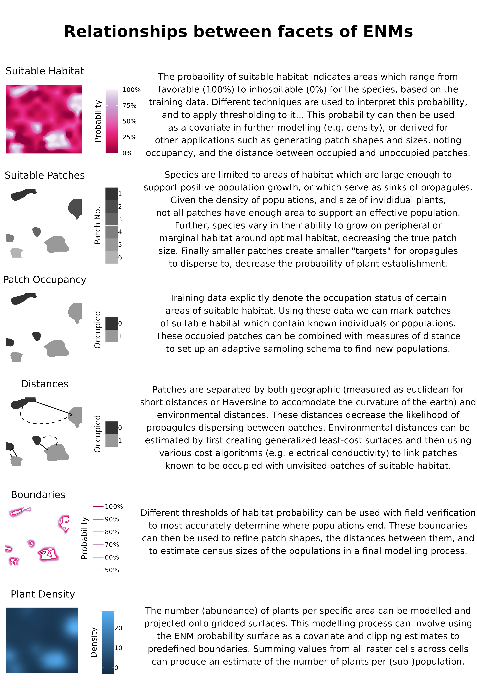

Predicting habitat suitability, occupancy, and census size, of a rare plant using iterative adaptive niche based sampling
Abstract
) 2) 3) 4)
Keywords
species distribution model, occupancy, census size estimates
1 | INTRODUCTION
The effects of anthropogenic stressors, e.g., land use and climate change, have led to a global extinction crisis, with estimates that 20-45% of plant species are facing extinction (Brummitt et al. 2015; Pimm & Joppa 2015; Nic Lughadha et al. 2020; Bachman et al. 2024). Determining which plant species to focus our conservation efforts (e.g., active restoration, preserve creation, ex situ collections) on requires an array of data that is seldom available to decision-makers (Heywood 2017). These data generally outline simple biological and ecological parameters of species, useful for detailing their rarity and how their distributions relate to current and future anthropogenic stressors. Chief amongst these parameters are the geographic extent of occurrence (range), the distribution of suitable habitat, the occupancy of this habitat as well as the spacing of occupied patches, and the census size of individual (sub-)populations (Commission 2001; Faber-Langendoen et al. 2012; USFWS species status assessment framework 2016). While these parameters are simple, characterizing them can be time-consuming, generally requiring extensive fieldwork and travel to field sites - hence they often require proxies or heuristics for estimation in conservation assessments (Bland et al. 2015; Juffe-Bignoli et al. 2016; Pelletier et al. 2018). Environmental niche models (ENMs or Species Distribution Models SDMs) have made enormous and respectable headway, respectively, in resolving the former two problems (extent, and occupancy) (Syfert et al. 2014; Kass et al. 2021; Anderson 2023), however the historic mismatch between the resolution of variables governing species distributions and the data available to serve as predictors of environmental conditions have restricted the interpretation and implementation of these models in highly heterogeneous environments (Guisan et al. 2013). Recent advances in remote sensing have enabled the generation of useful models in these generally biodiverse systems; further, these data offer promise for modeling additional population parameters (e.g., census size, population extent). However, the utility and use of high-resolution data have rarely been ground-verified or reported upon (Chiffard et al. 2020).
Recently, considerable headway has been made in generating statistically robust environmental niche models (ENMs), spurred by advances in collecting high-resolution environmental data, computing power, digitization of natural history museum records, and the acquisition of citizen science records and statistical methods, especially downsampling (Feldman et al. 2021; Markham et al. 2023). However, ENMs are rarely ground-verified, and even more seldom at landscape scales (A. Lee-Yaw et al. 2022). Hence, most of our knowledge about producing ENMs relies on simulated species and data, and generally at spatial resolutions considered relatively coarse to practitioners. An historic complication with the implementation and interpretation of ENM’s is a mismatch between the spatial resolution of the independent variables available to model the species’ fundamental niche and the factors governing the true distribution of populations - the realized niche (Lembrechts et al. 2019; Carscadden et al. 2020; Chauvier et al. 2022). Recent papers have had mixed results regarding the effects of imprecisely mapped occurrence data on ENM predictions, with indications that models generated in more heterogeneous environments, and at finer resolutions (e.g. ca. 3 arc-second to 10 arc-minutes (~14.5 km at 38\(^\circ\)) suffer minor decreases in model performance (Graham et al. 2008; Smith et al. 2023) with real species, while increasing error in mapping has drastic effects on model predictions with virtually simulated species (Gábor et al. 2022). A further mismatch of resolution is the year in which data on geographic localities were obtained and current conditions, which allow for positive population growth (Bracken et al. 2022). Historic occurrence data may now reflect conditions inhospitable to population maintenance, or even represent populations that were simply sinks from more robust populations (Bracken et al. 2022); using these records may decrease model performance. Collecting data on whether areas are favorable to continued recruitment from the soil seed bank is perhaps more pertinent than assessing whether long-lived individuals persist.
ENM models generally suffer from having few, often spatially biased, occurrence records as dependent variables, which often fail to characterize the ecological breadth of the species (Feeley & Silman 2011; Stolar & Nielsen 2015). Accordingly, while many ENMs achieve high performance on small hold-out subsets, they are unlikely to detect many new populations during ground verification (A. Lee-Yaw et al. 2022). To increase the number of presences and absences in sites that are relatively similar to those harboring presences, which can be used for training models, iterative adaptive-niche-based sampling (ANBS) has become increasingly employed (Guisan et al. 2006). In ANBS cells with a high probability of occurrence or where models have higher prediction uncertainty, are preferentially visited. After each round of field visits, a new model is fit, incorporating both the original and the most recent data (Mondain-Monval et al. 2024). Using this process not only allows for the acquisition of a larger number of presences and absences, but also allows for verifying coordinate placement, confirming that historic points are still extent, reducing model uncertainty, and acquiring additional data such as census estimates and life stages (Stockwell & Peterson 2002; Wisz et al. 2008; Jansen et al. 2022). However, few studies have reported field-verified ANBS sampling efforts of plant species [Johnson et al. (2023);; Borokini et al. (2023); Zimmer et al. (2023)].
An ENM predicts a single variable: the probability of suitable habitat for the taxon (taddeo2024grimes). Although in most conservation applications, the insight desired from an ENM is the species realized distribution (cite). The bridge between an ENM and a plant population’s presence is related to the dispersal of propagules and the establishment of the population, rather than the distribution of the fundamental niche alone (Engler & Guisan 2009). Calls - and significant progress have been made for better integration of SDM predictions with models of dispersal since the rise in popularity of ENMs Franklin (2010). Most of this progress focuses on the goal of ‘connecting’ currently suitable habitats to habitats predicted to be suitable under climate change scenarios Bocedi et al. (2014). Accordingly, ground verification has not been conducted for them, nor has apparently much effort been made to improve ground verification for rare species… To assist practitioners in detecting new populations or extending the range of known populations, we propose modeling plant occupancy as a random variable that depends on distance from known occupied sites, the size and shape of the target site, and its relation to other suitable habitats. In simple terms, these perspectives link habitat suitability to the tenets of island biogeography (CITE). ‘Distance’ may be defined as Euclidean (or Haversine for large distances), or as a least-cost distance reflecting a generalized surface which conveys the difficulty for seeds to travel between the nearest occupied sites and the site of interest (Etherington 2016). Landscape metrics postulated to relate to site occupancy include the patch metric Core Area Index, roughly reflecting the probability of a propagule arriving at a larger patch, and the class metrics proximity and contagion, both of which reflect aggregation among occupied sites.
Obtaining reliable estimates of plant population census sizes can be a time-intensive process requiring two pieces of information: 1) measurements of plant density and 2) population extent. Instead of directly determining either the population’s boundaries or density, observers estimate population sizes; however, these estimates are often unreliable (Reisch et al. 2018). Several promising field methods for acquiring density measurements have recently been developed (Schorr 2013; Alfaro-Saiz et al. 2019; Rominger & Meyer 2019; Ermakova et al. 2021; Krening et al. 2021) to estimate better effective population census size (N), as well as progress in the application of genomic methods to estimate effective population sizes (Ne) (e.g. linkage disequilibrium) (Waples 2024). However, these methods are focused on descriptive rather than predictive processes, estimating uncertainty in measurements within a population rather than across the species’ range. We propose that estimates of plant density are best generated using methods that allow fitting statistical models incorporating spatial covariates and that predict estimates and measurements of uncertainty across gridded surfaces (Oliver et al. 2012; A. Lee-Yaw et al. 2022; Doser et al. 2024).
Mapping the boundaries of a population is another time-consuming, albeit essential, task for realistic estimates of population census size. Currently, population boundaries are implicitly delineated by practitioners walking distances beyond which gene flow between individuals should be minimal (e.g., 1km), searching for additional individuals, or via aerial imagery (Elzinga et al. 1998). Many rare plant species are small and inconspicuous, and many taxa grow in small, clustered groups in specific habitats, making detection via either method difficult Condit et al. (2000). High-resolution spatial data eventually enable the determination of the extent of individual populations by detecting the edges of suitable habitat.
Here, we 1) assess the status of historic occurrence records, 2) develop ENMs at three spatial resolutions; 3) estimate population census size using 3a) models of plant density 3b) and delineated population boundaries; 4) use connectivity analysis in an ANBS context to conduct field work to identify new occurrences. Collectively, these steps all build from an ENM, and showcase its utility in serving as a variate and derived product for multiple facets of describing
2 | METHODS
Study Species & System
Eriogonum coloradense Small (Polygonaceae) is a synoecious mat-forming perennial herb endemic to the Central Southern Rocky Mountains in Colorado, U.S.A. It’s known geographic range covers XX km2, with 26 formally described populations, and it is thought to occur across a range of elevation, slopes, aspects, soil types, and habitats. Its elevation range spans xx - xx m, and the major habitat types it’s known from include high-elevation sagebrush steppe, subalpine grasslands, and alpine slopes. It is considered an S3/G3 species by NatureServe and a Tier 2 species in the State Wildlife Action Plan by the Colorado Parks and Wildlife Service (cite).
Data Acquisition
Dependent data were gathered from iNaturalist (80 records) and the Consortium of Southern Rockies herbaria (131 records) (“Southern rocky mountain herbaria portal”, INATURALIST). These data were manually reviewed, and 16 herbarium records with low geolocation quality or that were georeferenced to localities that did not match their herbarium labels were removed.
Digital Elevation Models at 3 arc (type) and 1 arc (type), and Digital Elevation Products at 1/3 arc and 1m resolution were acquired from the United States Geological Survey and clipped to the analysis domain (a rectangle buffered 16km (10 mi) beyond any known population). A 3m-resolution digital elevation model, which is not available at native resolution from the USGS for this area, was created by bilinear resampling of the 1m and 10m data. 1m-resolution data were available for roughly XX% of the domain (which contained %% of known populations); the remaining species domains’ 3m data were created by linear resampling of the 10m DEP. A comparison of these results in the overlapping region is presented in Appendix XX. These elevation products were used to create all geomorphology data sets using whiteboxTools (Wu & Brown 2022). Vegetation cover data were generated by combining raster data into continuous cover classes: Forested, Shrub, and Herbaceous (Tuanmu & Jetz 2014).
ClimateNA was used to create a dataset at 3 arc-second resolution, which was then bilinearly interpolated to generate products at finer resolutions (Wang et al. 2016). Gray co-occurrence level matrices were produced with the glcm R package from 2023 NAIP aerial imagery, bilinearly resampled to the original resolution, using default settings with a window size of 5 in both directions (Zvoleff 2020).
Ground Verification
Reading layer `Iteration1Pts' from data source
`/home/sagesteppe/Documents/Ecoloradense/data/GroundTruthing/Iteration1Pts.shp'
using driver `ESRI Shapefile'
Simple feature collection with 612 features and 11 fields
Geometry type: POINT
Dimension: XY
Bounding box: xmin: 314306.6 ymin: 4224126 xmax: 354841.3 ymax: 4337163
Projected CRS: WGS 84 / UTM zone 13N[1] 20The first round of ground verification was carried out from June to September 2024. All pre-existing occurrence points were considered candidates for revisits, and all 24 trails leading to them were marked as SAMPLE UNITS. Each trail was manually mapped and buffered by 45m in each direction; XXX random points were drawn, thinned to distances > XXX m, leaving XXX random plots for assessment. XX trails were visited, allowing for the assessment of 171 random points and 20 occurrences. When conducting field work, all presences of E. coloradense were opportunistically noted, and to better describe the spread of the population points were subjectively placed, with considerations of local abundance, ca. 30-50m from the previous one until traversing out of the population (n = 234). Additionally, subjectively placed absences were also collected in areas that seemed favorable, or were in proximity to E. coloradense individuals; this occurred both in the field (n = 1) and through the use of aerial imagery on a computer afterward (n = 66).
Adaptive Niche-Based Sampling was conducted in July 2025. To determine whether adaptive sampling performed better than alternative sampling regimes (e.g., stratified, random), and if it could be improved by occupancy modeling, 30 points were selected for each of the aforementioned sampling schemas, plus 30 occupancy points.
Comparison of Different Spatial Resolutions
Environmental Niche Models were generated at three spatial resolutions, 3 (~72m), 1 (~24m), and 1/3 (~8m) arc-seconds. The modeling details were similar across resolutions.
Records were thinned to the distance of a hypotenuse of a cell to avoid pseudo-replicates (Aiello-Lammens et al. 2015). 1.1 times as many Absence, as presence, records were generated using the background function with method environmental distance from sdm (Naimi & Araujo 2016). These records were then manually reviewed, and six records deemed to be in areas with possible presences were identified and removed. After this, the records were randomly sampled to reduce the data set to XX records. After the first modeling iteration, all additional presences and absences were thinned similarly and combined with the original absence records. ‘Presences’ with greater coordinate uncertainty than the modeling resolution were removed.
All random forest models were fit using the ranger package, 95% confidence intervals were generated using the infinitesimal jackknife Wright & Ziegler (2017).
Adaptive and Occupancy Based Field Sampling
500 stratified points ranging from 1-100% probability of suitable habitat were generated using sample (terra). Occupancy scores for each of these points were then calculated using (whiteboxtools). 200 points which maximized the spread of values along both dimensions (habitat, occupancy) were then chosen for ground verification.


Plant Density
Plant density was modelled using five methods, focusing on a comparison of spatial and non-spatial cross-validation methods.

Species Occupancy
3 | RESULTS
Comparision of Different Spatial Resolutions
The area under the receiver operating curve (AUC-ROC) and precision-recall curve (AUC-PR), the True Skill Statistic, and Sensitivity and Specificity Allouche et al. (2006).
Ground Verification
Plant Density
Species Occupancy
Simulations of Sample Size
4 | DISCUSSION
5 | CONCLUSIONS
6 | ACKNOWLEDGMENTS
REFERENCES
A. Lee-Yaw, J., L. McCune, J., Pironon, S. & N. Sheth, S. (2022). Species distribution models rarely predict the biology of real populations. Ecography, 2022, e05877.
Aiello-Lammens, M.E., Boria, R.A., Radosavljevic, A. & Vilela, B. (2015). spThin: An R package for spatial thinning of species occurrence records for use in ecological niche models. Ecography, 38, 541–545.
Alfaro-Saiz, E., Granda, V., Rodrìguez, A., Alonso-Redondo, R. & Garcìa-González, M.E. (2019). Optimal census method to estimate population sizes of species growing on rock walls: The case of mature primula pedemontana. Global Ecology and Conservation, 17, e00563.
Allouche, O., Tsoar, A. & Kadmon, R. (2006). Assessing the accuracy of species distribution models: Prevalence, kappa and the true skill statistic (TSS). Journal of Applied Ecology, 43, 1223–1232.
Anderson, R.P. (2023). Integrating habitat-masked range maps with quantifications of prevalence to estimate area of occupancy in IUCN assessments. Conservation Biology, 37, e14019.
Bachman, S.P., Brown, M.J.M., Leão, T.C.C., Nic Lughadha, E. & Walker, B.E. (2024). Extinction risk predictions for the world’s flowering plants to support their conservation. New Phytologist, 242, 797–808.
Bland, L.M., Orme, C.D.L., Bielby, J., Collen, B., Nicholson, E. & McCarthy, M.A. (2015). Cost-effective assessment of extinction risk with limited information. Journal of Applied Ecology, 52, 861–870.
Bocedi, G., Palmer, S.C., Pe’er, G., Heikkinen, R.K., Matsinos, Y.G., Watts, K. & Travis, J.M. (2014). Range s hifter: A platform for modelling spatial eco-evolutionary dynamics and species’ responses to environmental changes. Methods in Ecology and Evolution, 5, 388–396.
Borokini, I.T., Nussear, K., Petitpierre, B., Dilts, T.E. & Weisberg, P.J. (2023). Iterative species distribution modeling results in the discovery of novel populations of a rare cold desert perennial. Endangered Species Research, 50, 47–62.
Bracken, J.T., Davis, A.Y., O’Donnell, K.M., Barichivich, W.J., Walls, S.C. & Jezkova, T. (2022). Maximizing species distribution model performance when using historical occurrences and variables of varying persistency. Ecosphere, 13, e3951.
Brummitt, N.A., Bachman, S.P., Griffiths-Lee, J., Lutz, M., Moat, J.F., Farjon, A., Donaldson, J.S., Hilton-Taylor, C., Meagher, T.R., Albuquerque, S. & others. (2015). Green plants in the red: A baseline global assessment for the IUCN sampled red list index for plants. PloS One, 10, e0135152.
Carscadden, K.A., Emery, N.C., Arnillas, C.A., Cadotte, M.W., Afkhami, M.E., Gravel, D., Livingstone, S.W. & Wiens, J.J. (2020). Niche breadth: Causes and consequences for ecology, evolution, and conservation. The Quarterly Review of Biology, 95, 179–214.
Chauvier, Y., Descombes, P., Guéguen, M., Boulangeat, L., Thuiller, W. & Zimmermann, N.E. (2022). Resolution in species distribution models shapes spatial patterns of plant multifaceted diversity. Ecography, 2022, e05973.
Chen, G., Kéry, M., Plattner, M., Ma, K. & Gardner, B. (2013). Imperfect detection is the rule rather than the exception in plant distribution studies. Journal of Ecology, 101, 183–191.
Chiffard, J., Marciau, C., Yoccoz, N.G., Mouillot, F., Duchateau, S., Nadeau, I., Fontanilles, P. & Besnard, A. (2020). Adaptive niche-based sampling to improve ability to find rare and elusive species: Simulations and field tests. Methods in Ecology and Evolution, 11, 899–909.
Commission, N.Resources.S.S. (2001). IUCN red list categories and criteria. IUCN.
Condit, R., Ashton, P.S., Baker, P., Bunyavejchewin, S., Gunatilleke, S., Gunatilleke, N., Hubbell, S.P., Foster, R.B., Itoh, A., LaFrankie, J.V. & others. (2000). Spatial patterns in the distribution of tropical tree species. Science, 288, 1414–1418.
Doser, J.W., Finley, A.O., Kéry, M. & Zipkin, E.F. (2024). spAbundance: An r package for single-species and multi-species spatially explicit abundance models. Methods in Ecology and Evolution, 15, 1024–1033.
Elzinga, C.L., Salzer, D.W. & Willoughby, J.W. (1998). Measuring & monitoring plant populations. U.S. Dept. of the Interior, Bureau of Land Management, Denver, Colo.
Engler, R. & Guisan, A. (2009). MigClim: Predicting plant distribution and dispersal in a changing climate. Diversity and Distributions, 15, 590–601.
Ermakova, A., Trout, K., Terry, M.K., Whiting, C.V., Clubbe, C. & Fowler, N. (2021). Densities, plant sizes, and spatial distributions of six wild populations of Lophophora williamsii (cactaceae) in texas, USA. Journal of the Botanical Research Institute of Texas, 15, 149–160.
Etherington, T.R. (2016). Least-cost modelling and landscape ecology: Concepts, applications, and opportunities. Current Landscape Ecology Reports, 1, 40–53.
Faber-Langendoen, D., Nichols, J., Master, L., Snow, K., Tomaino, A., Bittman, R., Hammerson, G., Heidel, B., Ramsay, L., Teucher, A. & others. (2012). NatureServe conservation status assessments: Methodology for assigning ranks. NatureServe, Arlington, VA.
Feeley, K.J. & Silman, M.R. (2011). Keep collecting: Accurate species distribution modelling requires more collections than previously thought. Diversity and Distributions, 17, 1132–1140.
Feldman, M.J., Imbeau, L., Marchand, P., Mazerolle, M.J., Darveau, M. & Fenton, N.J. (2021). Trends and gaps in the use of citizen science derived data as input for species distribution models: A quantitative review. PloS One, 16, e0234587.
Franklin, J. (2010). Moving beyond static species distribution models in support of conservation biogeography. Diversity and Distributions, 16, 321–330.
Gábor, L., Jetz, W., Lu, M., Rocchini, D., Cord, A., Malavasi, M., Zarzo-Arias, A., Barták, V. & Moudrỳ, V. (2022). Positional errors in species distribution modelling are not overcome by the coarser grains of analysis. Methods in Ecology and Evolution, 13, 2289–2302.
Graham, C.H., Elith, J., Hijmans, R.J., Guisan, A., Townsend Peterson, A., Loiselle, B.A. & Group, N.P.S.D.W. (2008). The influence of spatial errors in species occurrence data used in distribution models. Journal of Applied Ecology, 45, 239–247.
Guisan, A., Broennimann, O., Engler, R., Vust, M., Yoccoz, N.G., Lehmann, A. & Zimmermann, N.E. (2006). Using niche-based models to improve the sampling of rare species. Conservation Biology, 20, 501–511.
Guisan, A. & Thuiller, W. (2005). Predicting species distribution: Offering more than simple habitat models. Ecology Letters, 8, 993–1009.
Guisan, A., Tingley, R., Baumgartner, J.B., Naujokaitis-Lewis, I., Sutcliffe, P.R., Tulloch, A.I., Regan, T.J., Brotons, L., McDonald-Madden, E., Mantyka-Pringle, C. & others. (2013). Predicting species distributions for conservation decisions. Ecology letters, 16, 1424–1435.
Heywood, V.H. (2017). Plant conservation in the Anthropocene–challenges and future prospects. Plant diversity, 39, 314–330.
Jansen, J., Woolley, S.N., Dunstan, P.K., Foster, S.D., Hill, N.A., Haward, M. & Johnson, C.R. (2022). Stop ignoring map uncertainty in biodiversity science and conservation policy. Nature Ecology & Evolution, 6, 828–829.
Johnson, S., Molano-Flores, B. & Zaya, D. (2023). Field validation as a tool for mitigating uncertainty in species distribution modeling for conservation planning. Conservation Science and Practice, 5, e12978.
Juffe-Bignoli, D., Brooks, T.M., Butchart, S.H., Jenkins, R.B., Boe, K., Hoffmann, M., Angulo, A., Bachman, S., Böhm, M., Brummitt, N. & others. (2016). Assessing the cost of global biodiversity and conservation knowledge. PLoS One, 11, e0160640.
Kass, J.M., Meenan, S.I., Tinoco, N., Burneo, S.F. & Anderson, R.P. (2021). Improving area of occupancy estimates for parapatric species using distribution models and support vector machines. Ecological Applications, 31, e02228.
Krening, P.P., Dawson, C.A., Holsinger, K.W. & Willoughby, J.W. (2021). A sampling-based approach to estimating the minimum population size of the federally threatened colorado hookless cactus (Sclerocactus glaucus). Natural Areas Journal, 41, 4–10.
Lembrechts, J.J., Nijs, I. & Lenoir, J. (2019). Incorporating microclimate into species distribution models. Ecography, 42, 1267–1279.
Markham, K., Frazier, A.E., Singh, K.K. & Madden, M. (2023). A review of methods for scaling remotely sensed data for spatial pattern analysis. Landscape Ecology, 38, 619–635.
Mondain-Monval, T., Pocock, M., Rolph, S., August, T., Wright, E. & Jarvis, S. (2024). Adaptive sampling by citizen scientists improves species distribution model performance: A simulation study. Methods in Ecology and Evolution.
Naimi, B. & Araujo, M.B. (2016). Sdm: A reproducible and extensible R platform for species distribution modelling. Ecography, 39, 368–375.
Nic Lughadha, E., Bachman, S.P., Leão, T.C., Forest, F., Halley, J.M., Moat, J., Acedo, C., Bacon, K.L., Brewer, R.F., Gâteblé, G. & others. (2020). Extinction risk and threats to plants and fungi. Plants, People, Planet, 2, 389–408.
Oliver, T.H., Gillings, S., Girardello, M., Rapacciuolo, G., Brereton, T.M., Siriwardena, G.M., Roy, D.B., Pywell, R. & Fuller, R.J. (2012). Population density but not stability can be predicted from species distribution models. Journal of Applied Ecology, 49, 581–590.
Pelletier, T.A., Carstens, B.C., Tank, D.C., Sullivan, J. & Espı́ndola, A. (2018). Predicting plant conservation priorities on a global scale. Proceedings of the National Academy of Sciences, 115, 13027–13032.
Pimm, S.L. & Joppa, L.N. (2015). How many plant species are there, where are they, and at what rate are they going extinct? Annals of the Missouri Botanical Garden, 100, 170–176.
Reisch, C., Schmid, C. & Hartig, F. (2018). A comparison of methods for estimating plant population size. Biodiversity and Conservation, 27, 2021–2028.
Rominger, K. & Meyer, S.E. (2019). Application of UAV-based methodology for census of an endangered plant species in a fragile habitat. Remote Sensing, 11, 719.
Schorr, R.A. (2013). Using distance sampling to estimate density and abundance of Saussurea weberi Hultén (weber’s saw-wort). The Southwestern Naturalist, 58, 378–383.
Smith, A.B., Murphy, S.J., Henderson, D. & Erickson, K.D. (2023). Including imprecisely georeferenced specimens improves accuracy of species distribution models and estimates of niche breadth. Global Ecology and Biogeography, 32, 342–355.
Sofaer, H.R., Hoeting, J.A. & Jarnevich, C.S. (2019). The area under the precision-recall curve as a performance metric for rare binary events. Methods in Ecology and Evolution, 10, 565–577.
Southern rocky mountain herbaria portal.
Stockwell, D.R. & Peterson, A.T. (2002). Effects of sample size on accuracy of species distribution models. Ecological Modelling, 148, 1–13.
Stolar, J. & Nielsen, S.E. (2015). Accounting for spatially biased sampling effort in presence-only species distribution modelling. Diversity and Distributions, 21, 595–608.
Syfert, M.M., Joppa, L., Smith, M.J., Coomes, D.A., Bachman, S.P. & Brummitt, N.A. (2014). Using species distribution models to inform IUCN red list assessments. Biological Conservation, 177, 174–184.
Tuanmu, M.-N. & Jetz, W. (2014). A global 1-km consensus land-cover product for biodiversity and ecosystem modelling. Global Ecology and Biogeography, 23, 1031–1045.
USFWS species status assessment framework: An integrated analytical framework for conservation 3.4. (2016). U.S. Fish; Wildlife Service, 5275 VA-7, Falls Church, VA 22041.
Wager, S., Hastie, T. & Efron, B. (2014). Confidence intervals for random forests: The jackknife and the infinitesimal jackknife. The Journal of Machine Learning Research, 15, 1625–1651.
Wang, T., Hamann, A., Spittlehouse, D. & Carroll, C. (2016). Locally downscaled and spatially customizable climate data for historical and future periods for north america. PloS One, 11, e0156720.
Waples, R.S. (2024). Practical application of the linkage disequilibrium method for estimating contemporary effective population size: A review. Molecular Ecology Resources, 24, e13879.
Wisz, M.S., Hijmans, R., Li, J., Peterson, A.T., Graham, C., Guisan, A. & Group, N.P.S.D.W. (2008). Effects of sample size on the performance of species distribution models. Diversity and Distributions, 14, 763–773.
Wright, M.N. & Ziegler, A. (2017). ranger: A fast implementation of random forests for high dimensional data in C++ and R. Journal of Statistical Software, 77, 1–17.
Wu, Q. & Brown, A. (2022). ’Whitebox’: ’WhiteboxTools’ r frontend.
Zimmer, S.N., Holsinger, K.W. & Dawson, C.A. (2023). A field-validated ensemble species distribution model of eriogonum pelinophilum, an endangered subshrub in colorado, USA. Ecology and Evolution, 13, e10816.
Zvoleff, A. (2020). Glcm: Calculate textures from grey-level co-occurrence matrices (GLCMs).